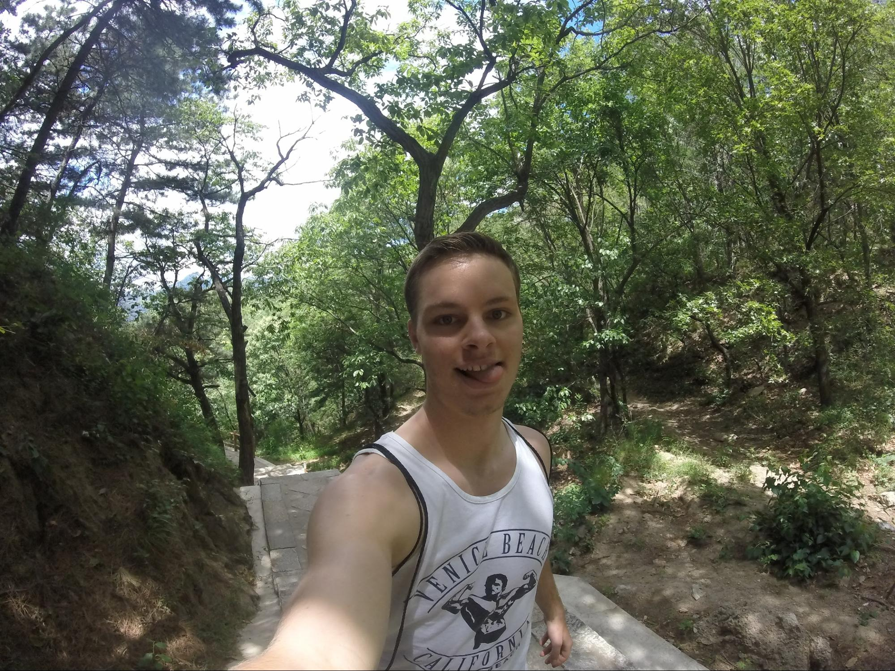
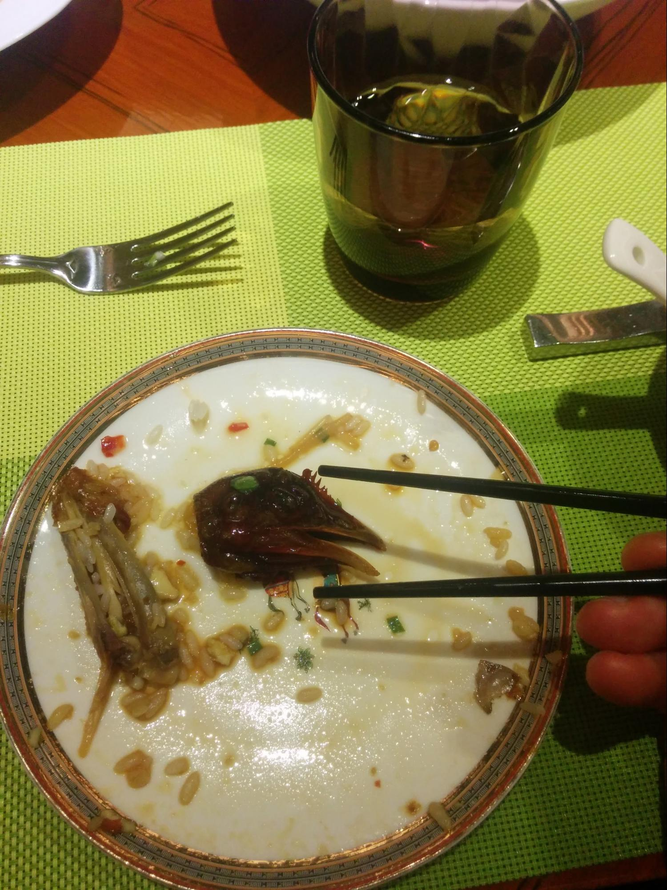
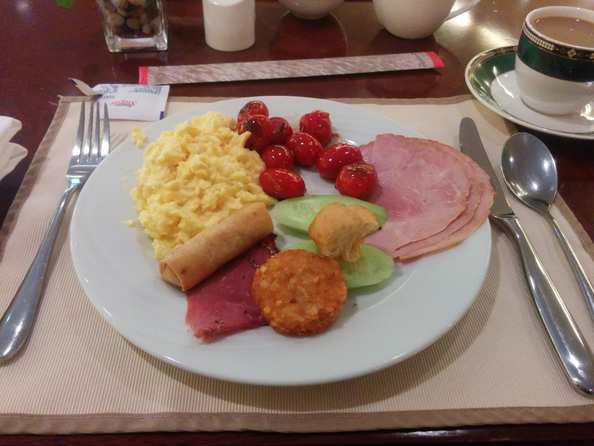
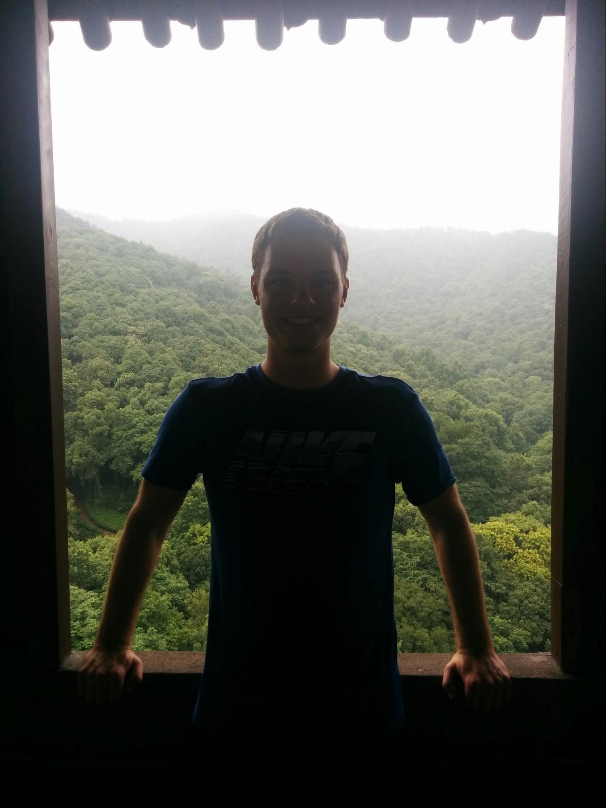
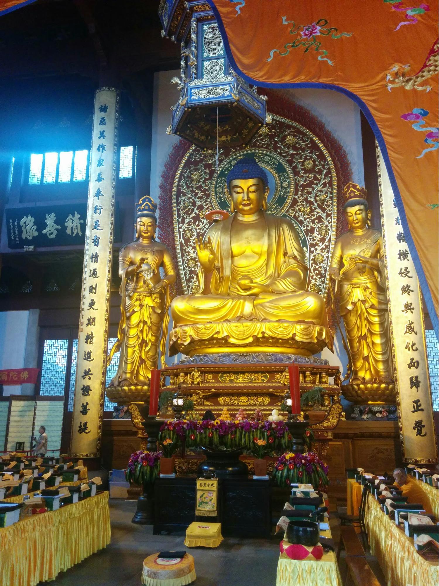
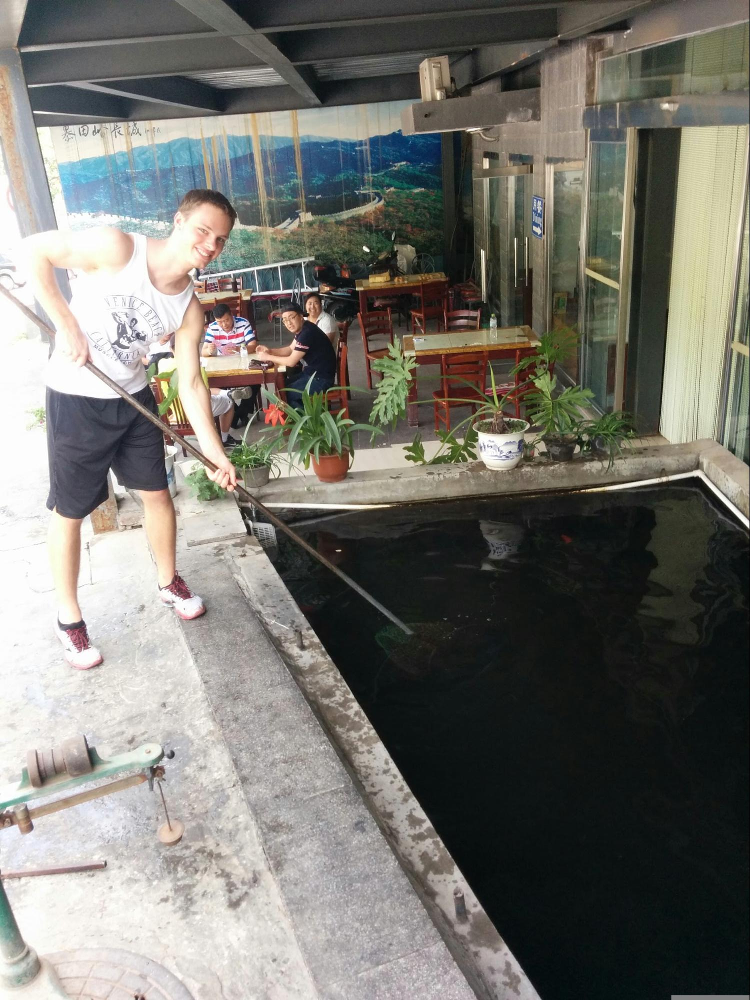
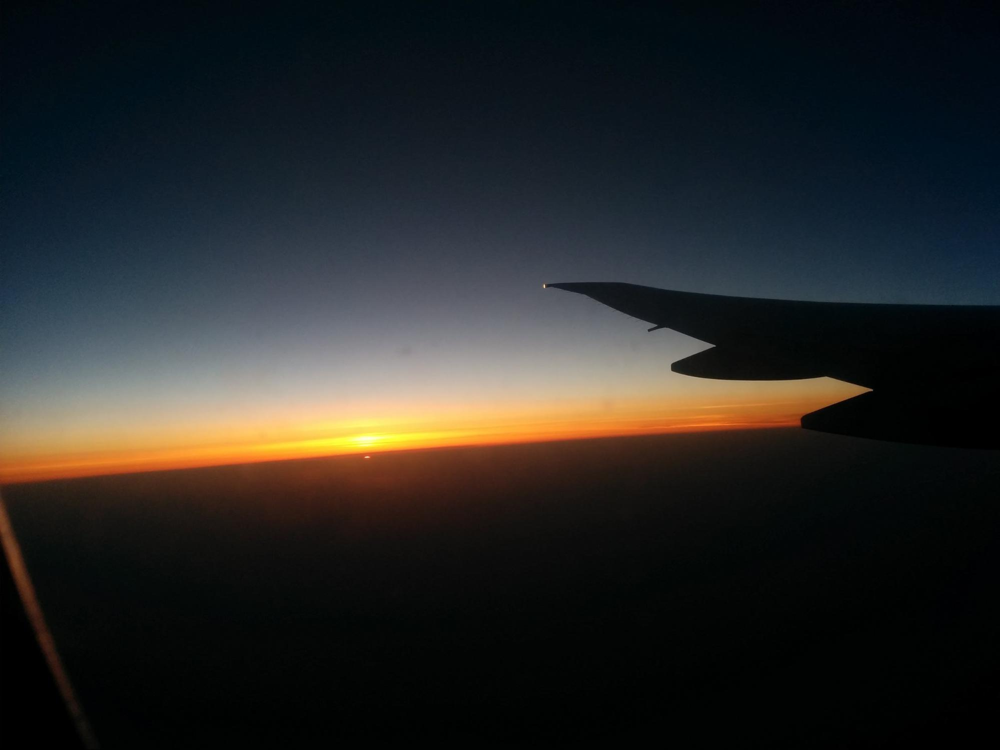

I'll begin in the Vancouver airport, where they have a small river through the airport along with an aquarium. This was pretty cool to have in an airport.
The plane ride was a little over 10 hours. Our flight path followed the coast of Alaska, then headed south along the east side of Asia. The plane cruised around 38,000 ft and close to 600 mph. The outside temperature remained around -60 degrees Fahrenheit.

This was our first taste of China, and it's lack of driving rules. Our driver was crazy as he swerved between cars and buses. Turn signals are not a thing, but instead, one simply honks to alert a car of one's next move. Our driver slowed slightly as we hit traffic. Soon after traffic our hotel came into view. The Radisson Blu Hotel Shanghai New World.
We arrived at the hotel safely and were immediately welcomed with hotel staff as they took our bags. Our room was on the 20th floor and had a great view looking over the city park.
For the majority of the afternoon we explored the park and city. The park was a maze of various paths through a jungle. In some places of the park you could find bamboo trees arching over the path. The city was chaotic as expected. The streets were filled with buses, cars, motorcycles and scooters all honking for the right of way. On the sidewalks there were street vendors, scooters and a lot of people.
The next morning I had breakfast at the hotel. The breakfast served everything, including fruit, cereal, pastries, meat, eggs and much more. I ate at least 5 plates of food.
Later in the day I used the gym and pool facilities at the hotel. The lockers use a cool wristband to unlock each locker. When unlocked, the locker glows blue. I was more fascinated than I should have been by this.
Over the next few days I routinely woke up around 6am and headed down to workout. I enjoyed dressing nice to fit into the 5-star atmosphere of the hotel.
On Thursday we took a tour of the city. We visited a temple with the largest white jade buddha statue. There were many other intricate carvings around the temple.
The Shanghai World Financial Building is on the right here. You can see why it's called the bottle opener.
The view from the top was pretty cool.
And the necessary selfie at 474 meters above the ground.
For lunch we visited a local restaurant and ate many different plates of food. There were different dishes from hot and cold dishes to meat and vegetable dishes. The chicken was served whole so I decided to try the brain. It didn't taste like much but made my classmates squirm.
At night all the buildings come to life with their flashy neon signs. The TV tower is one of the coolest buildings to watch because it is covered in colored lights that dance all night.
Sunday was our first day off from class. I began the day with the normal breakfast food. This was the first time I had eaten dragon fruit. The fruit looks like a kiwi, but colored white. It is definitely one of my favorite fruits.
Around noon I went to the gym and worked out. For lunch I really missed sandwiches so I walked down Nanjing road to Subway. Nanjing road is the street in front of our hotel. About half a mile away from the hotel, the road takes a detour, but Nanjing road becomes a walking street. There are hundreds of shops on either side of the street and thousands of people.
As I was watching the boats on the river, two girls and a guy came up to me asking for a photo. The girls were too shy to ask for a picture but their friend helped ask. Apparently I'm a celebrity in China because I was asked close to 10 times throughout the trip for pictures.
For dinner Dr. Jiang took us to a local Chinese restaurant called Make Iron. Luckily the restaurant was relatively empty so we got seats in front of the grill. Our food was prepared in front of us as the chef cooked, chopped and mixed our dishes in spectacular fashion. My dish was an amazing plate of noodles with beef. I liked it so much I came back the next afternoon for lunch.
For dinner I had an amazing dish of open ravioli with shrimp and cod fillet. We ate and conversed for nearly 3 hours in the restaurant and were able to see the entire city light up as the sun set.
Hangzhou has been called one of the most beautiful cities in the world. Nearly 70% of the main city is covered in vegetation. There are various lakes, gardens and rivers throughout the city.

We crossed over the beautiful lake in a cool little boat. Along the boat ride we saw many locals in their small boats paddling across the lake.
The next location in Hangzhou we visited was another garden filled with vegetation, rivers, temples and many happy buddhas.
Many of the statues were over 20 feet tall and covered in gold.
Next up on the tour was a pagoda that looked out over the river. For 10 Yuan you could walk the 226 steps to the top.
5 minutes later and 100 steps behind, I made it to the top.

Watermelon and other fruits were also provided along with the food.
The next morning we left to Beijing via the high speed train. The trip took close to 6 hours despite our 302 km/h speed.
For the remainder of the trip we stayed at Peking University. The university has over 30,000 enrolled students. We toured the beautiful campus the first day. In the middle of campus is a beautiful lake with a pagoda on one side.
On Saturday we headed out to visit the Great Wall of China. We arrived at the bottom of the mountain and had two choices to reach the Great Wall. Either take a hike up to the wall and meet at tower 10, or take the gondola up to tower 14. I opted for the hike while everybody else took the gondola.
I ended up meeting the group around tower 16. This section of the wall has 23 towers.
I was asked by a nice couple for a picture with them. (Still a celebrity?)
At one of the towers I climbed up onto the wall. Dr. Jiang thought I was crazy, along with most of the people there.
We had limited time on the wall and we had to take the same route back. I raced my classmates as they took the gondola.
The views from the Great Wall were breath taking. Our tour guide told us that the day we visited the Great Wall was one of the most beautiful days in months. (I guess we brought the good San Diego weather with us)
For lunch we stopped at the local restaurant. I ordered a rainbow trout and got to try my hand at catching one from the front of the restaurant. I came close, but the fish got away. One of the restaurant employees helped out and caught two fish in one try.
The next location on our tour of Beijing was the Bird's Nest stadium.
The grass is all natural and can be moved around with some well engineered platform below the grass. The stadium can seat over 100,000 people.
Across from the Bird's Nest is the natatorium where Michael Phelps won his gold medals for swimming in the 2008 Olympics. The building on the left is a dragon shaped hotel. The building centered in the photograph is the natatorium. (And once again my paparazzi have followed me)
On Sunday we visited the Summer Palace. This was the summer home for royalty. The palace sits on a beautiful lake. One of the coolest parts of the palace was the “Long Corridor”. The corridor is over 700m long and contains a world record 14,000 different detailed paintings.
Inside the walls are massive courtyards with temples and buildings scattered along the sides. Here's a picture of one of the courtyards.
There were various courtyards divided by walls and buildings. (I couldn't resist another handstand)
Each building is covered in beautiful colorful designs. (As you can tell it was quite hot outside)
The castle had around 1400 dragon statues everywhere you looked but this guy stood out to me. Some sort of watchdog.
Also on campus was a workout park. I had visited these parks in both London and Vancouver. These parks are usually a combination of bars and machines that can be used by anyone, anytime to workout. The first machine in this picture is an abdominal crunch machine. The next two are for your legs. You sit on the seat and push against the foot holds.
I enjoyed swinging around on the bars and practicing calisthenics. At one point I had a crowd of around 10 people watching me as I did my workout. (I might have done a few flashy moves…)
I also made friends with another guy who enjoyed calisthenics. His name was Horse Ma. Ma in Chinese also means horse. He is a research assistant at the university.
Several nights later we had our farewell dinner at the Quanjude restaurant. The restaurant has the most authentic Peking Duck and Dr. Jiang was very excited to take us. We were served over 5 courses of dishes and even I was full by the end. For dessert we had duck shaped pastries with red bean inside.
After packing up my suitcases and checking out, me and my classmates visited the cafe on campus. I ordered an amazing burger that was as big as my head. The employees give you gloves to conquer the sandwich.

My flight home left around 6pm Beijing time on Saturday. I would arrive in Vancouver a little after 2pm on Saturday. The coolest moment on the flight was seeing the sunset on the clouds. The combination of the blanket of clouds and clean air made this one of the most beautiful sunsets I've ever experienced.